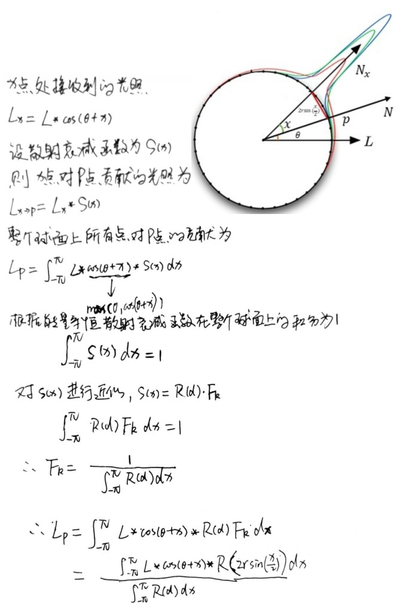

Skin Rendering
Table of Contents
Skin Rendering note.
<!– more –>
皮肤医学结构
皮肤分为 表皮 epidermis，真皮 dermis 和皮下组织 subcutaneous tissue
表皮的分层
角质层 Stratum corneum
位于表皮的最外层，由 5-20 层的扁平无核细胞组成，胞内细胞器结构消失，充满角蛋白。
透明层 Stratum lucidum
仅见于掌跖。由 2-3 层扁平无核细胞组成。
颗粒层 Stratum granulosum
由 2-4 层梭形细胞组成，细胞内含有透明角质颗粒。
棘层 Stratum spinosum
由 4-10 层多角形细胞组成，细胞间桥明显呈棘状。
基底层 Stratum basale
位于表皮的最下层，为一层立方形或圆柱状细胞，细胞的长轴与基底膜带垂直，胞核呈卵圆形，胞浆内含有黑素颗粒，核分裂象常见。
具有不断分裂增殖的能力，因此又称为生发层。由基底层移行至颗粒层最上层约需 14 天，再移行至角质层表面脱落又需 14 天，称为表皮通过时间。


Gem3Skin
- 原文链接 Advanced Techniques for Realistic Real-Time Skin Rendering https://developer.nvidia.com/gpugems/GPUGems3/gpugems3_ch14.html
实现总结
高光
高光使用了基于物理的 BRDF，为了加速计算，对 BRDF 进行了预计算。
float PHBeckmann(float nDotH, float roughness) { float alpha = acos(nDotH); float ta = tan(alpha); float r2 = roughness * roughness; float val = 1.0 / (r2*pow(nDotH, 4.0))*exp(-(ta*ta) / r2); return 0.5*pow(val, 0.1); }
Diffuse
计算 RhodtTexture，
计算 BRDF 在半球空间的积分，得到剩余的被散射的比例。
计算 IrradianceTexture
在贴图空间，计算被散射的能量。渲染模型，结果按照模型 UV 输出（这就是所谓的贴图空间渲染）。
v2f vert (appdata v) { v2f o; #if UNITY_UV_STARTS_AT_TOP o.pos = float4((v.uv0 * 2 - 1)*float2(1,-1), 0, 1); #else o.pos = float4(v.uv0 * 2 - 1, 0, 1); #endif o.tex = v.uv0; o.posWorld = mul(unity_ObjectToWorld, v.vertex); o.eyeVec.xyz = _WorldSpaceCameraPos - o.posWorld.xyz; return o; }
计算 StretchCorrectionTexture
在贴图空间，矫正贴图空间的模糊(曲率比较大的地方，相邻点的空间距离比其贴图上的距离要小)
// 同样是在贴图空间进行计算，得到贴图被拉伸的程度(其实也是模型本身的曲率) fixed4 frag (v2f i) : SV_Target { float3 posWorld = i.posWorld; float3 derivU = ddx(posWorld); float3 derivV = ddy(posWorld); float stretchU = 1 / length(derivU) * _StretchScale; float stretchV = 1 / length(derivV) * _StretchScale; return float4(stretchU, stretchV, 0, 1); }
计算 SeamMaskTexture
在贴图空间，将所有 StretchTexture 的 alpha 通道相乘得到 SeamMask
对 StretchTexture 和 IrradianceTexture 进行模糊
在贴图空间，对 IrradianceTexture 进行高斯模糊来模拟散射。一共使用 6 个高斯函数，RGB 通道使用不同的权重。6个高斯函数近似 multi-dipole profiles
高斯模糊近似 R(d)函数
R(d)r = 0.078*G(sqrt(7.41), d) + 0.358*G(sqrt(1.99), d) + 0.113*G(sqrt(7.41), d) + 0.118*G(sqrt(0.358), d) + 0.100*G(sqrt(0.0484), d) + 0.233*G(sqrt(0.0064), d);


下面文件为一维高斯函数图形：
./SkinRendering/002_gaussian_function.ggb
代码实现
// 在贴图空间，先对StretchTexture进行模糊，然后再对IrradianceTexture进行模糊 fixed4 frag (v2f i) : SV_Target { float scale = _MainTex_TexelSize.x * _GaussianWidth / _BlurStepScale; float2 uvDelta = float2(scale, 0.0); #if defined(CONV_V) uvDelta.xy = uvDelta.yx; #if defined(ENABLE_STRETCH_CORRECTION) uvDelta.y *= tex2D(_StretchTex, i.uv).y; #endif #else #if defined(ENABLE_STRETCH_CORRECTION) uvDelta.x *= tex2D(_StretchTex, i.uv).x; #endif #endif float2 coords = i.uv - uvDelta*3.0; float4 sum = 0.0; // 期望为0，标准差为1 的高斯函数离散的函数值 float curve[7] = { 0.006, 0.061, 0.242, 0.383, 0.242, 0.061, 0.006 }; for (int j = 0; j < 7; j++) { float4 tap = tex2D(_MainTex, coords); sum += curve[j] * tap; coords += uvDelta; } return sum; }
参考资料
- Advanced Techniques for Realistic Real-Time Skin Rendering https://developer.nvidia.com/gpugems/GPUGems3/gpugems3_ch14.html
- 角色渲染技术——皮肤 https://zhuanlan.zhihu.com/p/27014447
- GPU Gems 3 真实感皮肤渲染技术总结 https://zhuanlan.zhihu.com/p/42433792
高斯卷积核求解
- 如何通俗易懂地解释卷积？ https://www.zhihu.com/question/22298352
- Gaussian filter, or Gaussian blur http://www.librow.com/articles/article-9
- 高斯函数 https://www.zhihu.com/question/33214189
- 理解图像卷积操作的意义 https://blog.csdn.net/chaipp0607/article/details/72236892?locationNum=9&fps=1
- 高斯卷积核计算器 http://dev.theomader.com/gaussian-kernel-calculator/
- 将 2D 卷积核转化为 1D https://blogs.mathworks.com/steve/2006/11/28/separable-convolution-part-2/
- 2D GaussianBlur To 1D https://stackoverflow.com/questions/25216834/converting-2d-mask-to-1d-in-gaussian-blur
Pre-Intergrating the Effects of Scattering
Pre-integrating the Effect of Scattering
我们没有通过收集渲染位置处所有方向的入射光来实现次表面散射。而是探索预积分皮肤中的次表面散射效果。
只有三件事情会引入可见的散射：
- 模型曲率的变化
- normal map 中的突起
- 遮挡光导致的阴影
Scattering and Diffuse Light
nDotL 是主要导致入射光变化的原因，其使得散射变得明显。
我们考虑通过球谐光照模拟所有方向上的光，以此来预计算表面上任意一点的散射光效果。但是球谐方式只能高效地表示低频率变化的光，对于高频变化的光需要很多系数。因此，我们放弃了预计算散射效果，而选择预计算表面形状子集的散射衰减，并在渲染时确定最好的衰减.
我们在运行时可以计算表面的曲率，其最大程度决定了光滑表面的散射效果。
为了测量曲面上的散射，我们添加了曲率作为第二个参数。我们简单从一个方向照射给定曲率的球面，并测量各个角度上累计的光照。
下图为散射光公式推导：

当前模型假设所有的皮肤和球相似，但是皮肤可以为任意拓扑结构。换句话说，当前模型假设给定点的散射由该点自身的曲率决定，而事实上是由该点周围所有点的曲率决定。因此，该模型在平滑的表面上(曲率变化不大的表面上)效果可以，但是曲率变化比较大时，就不适用了。幸运的是，大多数皮肤模型都有两层：使用几何表示光滑的表面，使用 normal map 表示表面细节。
- 如何简明地解释曲率（curvature）？ https://www.zhihu.com/question/25952605
Scattering and Normal Maps
皮肤上小的皱纹、毛孔通常通过 normal map 来表示。小折痕的法线总是会返回表面主法线，因此从小折痕反射的散射光和不散射表面上折痕更宽的地方反射的光看起来很像。因此可以通过模糊 normal 来近似皱纹、毛孔等小褶皱照成的散射。对于不同波长的光，diffusion profiles 不同，模糊 normal 的方式也不同。
从实际的物体抓取 normal 贴图时，发现 normal 会向表面法线偏转，而且不同波长的光偏转程度不同，红光比绿光偏转程度大。还观察到使用多个波长的光抓取的多个 normal 进行渲染要比使用单个 normal 效果要好。
我们的做法为，假定原始的 normal map 是精确的表面法线，对其进行 blur 而得到每个波长对应的 normal。因此，不能为了得到更光滑的效果，而直接提供 blur 过的 normal map 做原始的 normal map，否则再对其进行 blur 得到的每个波长的 normal 将不正确。
使用 diffusion profile 直接对 normal map 进行 blur 是不可行的，因为光照对于表面法线不是线性过程。需要使用 LEAN 或 CLEAN。
值得注意的是，在法线贴图的过滤区域内，当法线的自阴影/入射光/散射光项为常数时，使用非归一化的 normal 是一个可行的近似，此时我们有如下关系式：

上面关系式不是总成立的，因为 diffuse lighting 包含一个自阴影项 max(0, N.L)来取代上式中的 N.L。尽管如此，当法线过滤区域内都没阴影或都有阴影时，使用非归一化的法线依然是正确的。
我们开发了一种近似的方法，其只用一张包含 mipmap 的法线贴图。使用该优化方法时，specular normal 的采样依然不变，但同时使用另一个采样器采样高一级的 mipmap 得到 red normal。然后将 specular normal 和 red normal 变换到 tangent 空间，对他们进行混合得到 green 和 blue normal。最后的 diffuse-lighting 计算需要执行三次。
如果法线贴图只包含很小的细节，甚至可以使用几何法线来代替 red normal。
Shadow Scattering
光散射到阴影是真实感皮肤的重要特性之一。使用一点小技巧就可以预计算阴影边界上的散射效果。
我们可以将阴影映射算法当作一个衰减函数。当衰减为完全黑或完全白，对应着完全遮挡和完全不遮挡。我们可以重新设置完全黑和完全白之间的值。特别地，如果我们确定我们的阴影过滤器创建的半影尺寸足够容纳大部分的 diffusion profile，我们可以缩小原始半影的尺寸，多出来的尺寸用于基于 diffusion profile 的散射。


为了计算精确的衰减，我们将阴影半影和 diffusion profile 进行预积分。我们将阴影半影 P()定义为一个一维衰减函数，该函数来自于使用阴影贴图映射的 blur kernel 对硬阴影边界的过滤。假定阴影映射的 kernel 为单调递减的，则对应的衰减函数也是单调递减，这样就可以对阴影半影 P()求反函数 \(P^{-1}()\) 。这样就可以通过给定的阴影值获得对应的半影中的位置。例如，如果阴影映射为 BoxFilter，则阴影半影函数 P()就是一个线性的斜坡，此时对应的反函数 \(P^{-1}()\) 也是一个线性的斜坡。
我们假定了阴影是透射在一个平面上的，如果表面倾斜度很大，半影尺寸将比我们预计算时使用的值大很多。因此，我们为阴影衰减贴图增加了第二个维度，其表示世界空间中的半影尺寸。最后，我们生成阴影 LUT 的公式如下：
半影宽度可以通过表面和对应光源的夹角得到，或者直接对阴影值进行求导。
当半影拉升到倾斜度高的表面时，此时提供了散射衰减空间更大。此时，可以对半影宽度值进行截取，保证其在 LUT 贴图范围内。
Improve Pre-Intergrating
Env Light Pre-Intergrating Scattering
Approximate Pre-Intergrating Scattering
ScreenSpace Perceptual Rendering of Human Skin
实现细节
Blur Kernel width
Blur Kernel width 需要考虑下面两个情况
- 远处的物体应该使用窄的 kernel
- depth map 中梯度变化大的也需要使用窄的 kernel
使用下面的公式来实现：

从上面公式可以看到，深度梯度增加会减小 kenel 宽度；这就限制了背景像素和 skin 像素进行卷积。在物体的边界处，深度梯度会很大，kernel 宽度就会很小。
上面公式中的α值受下面一些因素影响：
- 物体在 3D 空间中的尺寸
- 摄像机的 FOV
- viewport size
下图展示了α和β分别变化对最终渲染结果的影响：

float4 BlurPS(PassV2P input, uniform float2 step) : SV_TARGET { // Gaussian weights for the six samples around the current pixel: // -3 -2 -1 +1 +2 +3 float w[6] = { 0.006, 0.061, 0.242, 0.242, 0.061, 0.006 }; float o[6] = { -1.0, -0.6667, -0.3333, 0.3333, 0.6667, 1.0 }; // Fetch color and linear depth for current pixel: float4 colorM = colorTex.Sample(PointSampler, input.texcoord); float depthM = depthTex.Sample(PointSampler, input.texcoord); // Accumulate center sample, multiplying it with its gaussian weight: float4 colorBlurred = colorM; colorBlurred.rgb *= 0.382; // Calculate the step that we will use to fetch the surrounding pixels, // where "step" is: // step = sssStrength * gaussianWidth * pixelSize * dir // The closer the pixel, the stronger the effect needs to be, hence // the factor 1.0 / depthM. float2 finalStep = colorM.a * step / depthM; // Accumulate the other samples: [unroll] for (int i = 0; i < 6; i++) { // Fetch color and depth for current sample: float2 offset = input.texcoord + o[i] * finalStep; float3 color = colorTex.SampleLevel(LinearSampler, offset, 0).rgb; float depth = depthTex.SampleLevel(PointSampler, offset, 0); // If the difference in depth is huge, we lerp color back to "colorM": float s = min(0.0125 * correction * abs(depthM - depth), 1.0); color = lerp(color, colorM.rgb, s); // Accumulate: colorBlurred.rgb += w[i] * color; } // The result will be alpha blended with current buffer by using specific // RGB weights. For more details, I refer you to the GPU Pro chapter :) return colorBlurred; }
渲染流程和贴图空间 SSS 的对比


缺陷

- 特定配置下会产生小的光晕、光环 例如，上图第一幅图鼻子和阴影接壤的地方。这是因为屏幕空间中相邻的像素在三维空间中可能并不相邻导致的。
- 该算法没有考虑薄的、曲率高的地方的一些特性。 例如上图第二副图中的耳朵部位，上图第三幅图为使用 TSSSS 渲染的结果，其通过修改 Translucent Shadow Map 考虑了薄部位的特性。
Misc
Normal Map Mipmap
该文件展示了 normal map 的混合：
./SkinRendering/111_normal_map_lerp.ggb
- Normal Map Mipmap https://www.jianshu.com/p/efabea28ed1a
- Mipmapping_Normal_Maps https://developer.download.nvidia.com/whitepapers/2006/Mipmapping_Normal_Maps.pdf
- Spectacular-Specular-LEAN-and-CLEAN video https://www.gdcvault.com/play/1014557/Spectacular-Specular-LEAN-and-CLEAN
- Spectacular-Specular-LEAN-and-CLEAN ppt https://fdocuments.in/document/spectacular-specular-lean-and-clean-specular-highlights-dan-baker-firaxis.html
NoLWrap
下面文件展示了 nol wrap 的曲线：
./SkinRendering/111_nol_wrap.ggb
参考资料
- 《GPU Gems 3》：真实感皮肤渲染技术总结 https://zhuanlan.zhihu.com/p/42433792
- 低成本皮肤渲染 Pre-integrated Skin https://zhuanlan.zhihu.com/p/35628106
- Pre-Integrated Skin http://simonstechblog.blogspot.com/2015/02/pre-integrated-skin-shading.html
- separable-sss https://github.com/iryoku/separable-sss
- GPU Gem3 Advanced Techniques for Realistic Real-Time Skin Rendering
- GPU Pro 1 Screen-Space Subsurface Scattering
- GPU Pro 2 Part2 Chapter1 Pre-Integrated Skin Shading
- GPU Pro 5 Part4 Chapter1 Realistic Real-Time Skin Rendering on Mobile
- SoulShell：实时虚拟角色 https://zhuanlan.zhihu.com/soulshell